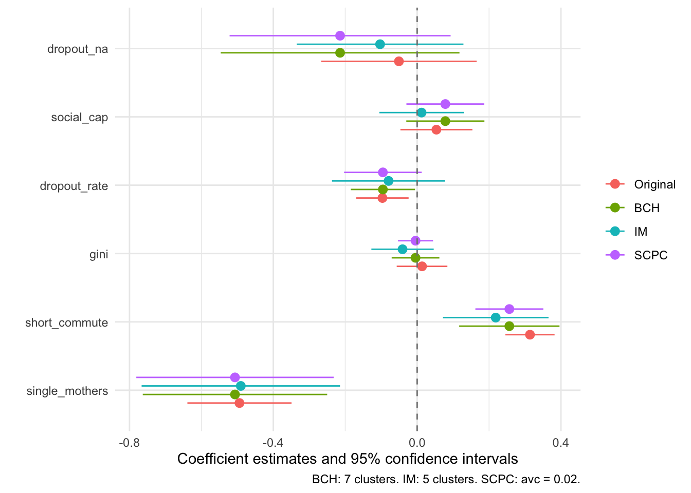

# pak::pkg_install("morganwkelly/spatInfer")spatInfer Tutorial
The purpose of spatInfer is to provide a simple workflow to produce reliable results from regressions based on spatial observations. It represents an extension of methods introduced in Conley and Kelly (2024). The package does two things. First, it controls for spatial trends or other large spatial structure using a flexible spline basis. Then it carries out estimation using three very different standard error corrections: the large cluster standard errors of Bester, Conley, and Hansen (2011) (BCH), the t-test of Ibragimov and Müller (2010) (IM) and the scpc procedure of Müller and Watson (2022) (SCPC). In particular it allows an optimal level of the tuning parameter for each test to be selected.
A feature of spatInfer is its simple workflow, requiring a sequence of only three steps.
Estimate the optimal spatial basis to control for large scale structure in the data.
In a single command, generate spatial noise placebos and synthetic outcomes. The placebos select the optimal tuning parameter for each procedure (number of clusters for BCH and IM, and avc for SCPC) and estimate the placebo significance level of the treatment. The synthetic outcomes test the null hypothesis that the outcome is spatial noise, independent of the treatment.
Produce a table and coefficient plot to compare the results of all three procedures.
This tutorial covers least squares regressions. Instrumental variable regressions follow the same workflow, and are covered in the tutorial for instrumental variables.
Three Standard Error Corrections
spatInfer reports heteroskedasticity robust (HC) standard errors alongside three spatially robust corrections. Because they are constructed in entirely different ways, results that agree across all three can be regarded as reliable.
BCH. The large cluster standard errors of Bester, Conley, and Hansen (2011) partition the observations into c large clusters using k-medoids, and compute clustered standard errors. The tuning parameter is the number of clusters. If there are too many, residuals will be correlated between clusters leading to inconsistent standard error estimates, whereas too few will result in unnecessarily wide confidence intervals.
IM. The t-test of Ibragimov and Müller (2010) also uses large clusters. The regression of interest is run on each cluster separately and the estimated coefficients of the treatment \hat{\beta}_c for each cluster c are collected. The p-value of a regression of these coefficients on a constant is conservative up to a value of 0.08. Besides the fact that it rests on a minimum of assumptions about the data generating process, a great attraction of IM is that it formalizes the intuition that if an effect is real it should hold everywhere: coefficients should be similar across clusters. Its tuning parameter is again the number of clusters.
SCPC. The spatial correlation principal components procedure of Müller and Watson (2022) does not use clusters. Instead it bounds the average pairwise correlation between observations by a parameter
avc, and derives a t-test that is valid for any pattern of spatial correlation within that bound. Larger values ofavcallow for stronger spatial correlation and give wider confidence intervals.
The tuning parameter of each, the number of clusters for BCH and IM and avc for SCPC, is chosen by the spatial noise placebo test in Step 2.
The Data
The first step is to download spatInfer.
We begin by loading the spatInfer library and the data frame called opportunity. This includes the variables used in the second column of Table VI in Chetty et al. (2014) which examines the determinants of intergenerational income mobility across US cities. Specifically, it regresses absolute upward mobility on five variables: fraction of single mothers, fraction short commute, Gini bottom 99%, high school dropout rate, and social capital index. Observations for Alaska and Hawaii are omitted to allow meaningful spatial correlations to be estimated. The longitude and latitude of each observation are included in the data. These must be named X and Y.
The treatment of interest is placed as the first on the right hand side of the regression formula. If several are of concern the procedure can be repeated using each as the first entry. Here we will focus on single mothers.
library(spatInfer)
library(modelsummary)
library(ggplot2)
library(tinytable)
data(opportunity)
fm=mobility~single_mothers+short_commute+gini+dropout_rate+social_cap+dropout_na1. Choose the Spatial Basis
The first step is to estimate the optimal spatial basis that best explains the outcome variable. The spatial basis serves both to remove long range structure from the data (acting like a systematic and parsimonious version of the 49 state dummies included in the original regression) and to improve inference by reducing the autocorrelation among residuals.
We apply the simplest basis possible: a k \times k tensor of linear b-splines and, to minimize the loss of degrees of freedom, we select the first p principal components of the tensor. The first command optimal_basis chooses the combination of k and p that minimizes a Bayes Information Criterion. To make the diagram legible, select the maximum basis degree that you want to examine. As with most commands in R it starts with the regression formula and the name of the dataset: the choice of right hand side variables does not matter at this stage.
optimal_basis(fm, opportunity, max_splines=7)
It can be seen here that the optimal combination is the first 15 principal components of a 6x6 spline. It is notable that this very small number of spatial controls explains 60% of variability in the outcome, compared with 64% obtained by using the 49 state dummies of the original study. Knowing only the location of a place lets you make a decent guess about the likely degree of mobility there, without knowing anything about its other characteristics.
It is useful to plot the tensor surface of intergenerational mobility to see how geometrically simple it is. The viewpoint is from the southeast of the US and the angular surface reflects the fact that a product of linear B-splines (series of overlapping triangles) is used.
plot_basis(fm, opportunity,
splines=6,
Title="6x6 Tensor Surface of Mobility")
2. Run Placebo and Synthetic Outcome Tests
Placebo test
Having chosen a spatial basis, we need to choose the tuning parameter of each standard error correction: the number of clusters for BCH and IM, and avc for SCPC. To do this we use spatial noise placebos.
The placebos are constructed to have the same spatial structure as the treatment, here single mothers. First, the treatment is regressed on the spatial basis terms selected in Step 1. The spatial correlation between the detrended residuals is assumed to decay exponentially so that the correlation between two at distance h apart is \rho \exp (- \theta / h).1 The parameters \rho and \theta are referred to as the structure and range of the correlation. Effective range is 2 \theta: at this distance correlation equals 0.14. These parameters are estimated by maximum likelihood using the fields library and then used to estimate synthetic residuals which are added back onto the predicted treatment values to give the placebo values. The regression is run repeatedly with simulated placebos in place of the real treatment and the p-values of each simulation are recorded.
These placebo p-values give us two useful things. The first is a placebo significance level of the treatment: how often does a placebo have a lower p-value (higher t-statistic) than the treatment.
The second is that the placebos provide a Monte Carlo simulation to evaluate the inference procedure used. If substantially more than 5% of placebo regressions are significant at 5% we can conclude that the standard error estimate is deficient. The placebo Monte Carlos therefore allow an optimal number of clusters, and an optimal value of avc, to be picked.
Synthetic outcome test
The second test computes the synthetic outcome p-value: Can we reject the null hypothesis that the outcome is trending spatial noise, and therefore independent of the treatment?
An important thing about the synthetic outcome test is that it can be computed in situations where there is a binary treatment so a placebo test cannot be estimated. In this case it is best to report the p-values for a range of cluster values from 3 to 5 or more, and a range of avc values, to allow readers to judge the robustness of the results.
It is assumed that the outcome is generated in the simplest manner possible: as a quadratic in longitude and latitude. Noise is generated using maximum likelihood estimates of the residuals’ spatial parameters, and the regression is run repeatedly with these synthetic outcomes in place of the real one.
Running both tests
Both tests are run by the single command placebo_synth, which gives the results for HC, BCH, IM and SCPC. Again this starts off with the formula and data, followed by the tensor degree and number of principal components just picked by optimal_basis, and then the number of simulations. max_clus gives the largest number of clusters to examine for BCH and IM, and avc the values to examine for SCPC, which are the slowest to compute and are left out if avc is not given. In practice the simulations settle down rapidly and 1000 will give accurate results but you may want to start with around 200 which will quickly give you a good idea of how your data are behaving. A progress bar shows which test is running and how many simulations are done. The simulations run in parallel by default. If you encounter computational problems you should set the option Parallel=FALSE.2
ps=placebo_synth(fm, opportunity,
splines=6,
pc_num=15,
nSim=1000,
max_clus=7,
avc=seq(0.02, 0.1, by=0.02))
placebo_synth_table(ps, caption="Placebo and synthetic outcome significance levels of the single mothers variable.")| Adj | Clusters/avc | Est p | Plac p | Plac 5% | Synth p | CI Width | CI |
|---|---|---|---|---|---|---|---|
| Moran=15.69, N=693, Splines=6, PCs=15. | |||||||
| Treatment: Structure=0.96, Effective Range=0.05, R2=0.46. Outcome: Structure=0.88, Effective Range=0.15, R2=0.43. | |||||||
| Estimated and placebo p values, proportion of placebo regressions significant at 5%, synthetic outcome p values and confidence intervals, with HC inference, BCH and IM inference for each number of clusters, and SCPC inference for each value of the average correlation bound avc. Treatment R2 gives the explanatory power of a regression of the treatment on the principal components, and outcome R2 of a regression of the outcome on a quadratic in longitude and latitude. | |||||||
| HC | . | 0 | 0 | 0.13 | 0 | 0.142 | [-0.578, -0.436] |
| BCH | 3 | 0.075 | 0.09 | 0.057 | 0.14 | 1.26 | [-1.14, 0.124] |
| 4 | 0.038 | 0.058 | 0.076 | 0.059 | 0.912 | [-0.962, -0.0508] | |
| 5 | 0.02 | 0.015 | 0.062 | 0.041 | 0.752 | [-0.883, -0.131] | |
| 6 | 0.012 | 0.013 | 0.06 | 0.041 | 0.671 | [-0.842, -0.171] | |
| 7 | 0.003 | 0.008 | 0.08 | 0.011 | 0.513 | [-0.763, -0.25] | |
| IM | 3 | 0.057 | 0.053 | 0.046 | 0.055 | 0.972 | [-0.94, 0.0316] |
| 4 | 0.023 | 0.024 | 0.046 | 0.022 | 0.719 | [-0.845, -0.126] | |
| 5 | 0.008 | 0.004 | 0.054 | 0.007 | 0.552 | [-0.766, -0.215] | |
| 6 | 0.003 | 0.002 | 0.042 | 0.002 | 0.487 | [-0.769, -0.282] | |
| 7 | 0.002 | 0.002 | 0.054 | 0.004 | 0.443 | [-0.699, -0.256] | |
| SCPC | 0.02 | 0.003 | 0.001 | 0.052 | 0.003 | 0.549 | [-0.781, -0.232] |
| 0.04 | 0.009 | 0.007 | 0.046 | 0.005 | 0.656 | [-0.835, -0.178] | |
| 0.06 | 0.013 | 0.008 | 0.03 | 0.011 | 0.723 | [-0.868, -0.145] | |
| 0.08 | 0.023 | 0.008 | 0.026 | 0.016 | 0.815 | [-0.914, -0.0993] | |
| 0.1 | 0.03 | 0.008 | 0.021 | 0.018 | 0.874 | [-0.943, -0.0698] | |
placebo_synth_table shows every correction in one table. The top row uses heteroskedasticity consistent standard errors: if spatial correlation in residuals turns out to be unimportant these are the ones to use. Below this are the BCH and IM results for three up to seven clusters, and the SCPC results for each value of avc, which is given in the Clusters/avc column. The Est p column gives the estimated p-value of the treatment variable from a regression that includes spatial basis terms. As the number of clusters increases this will generally fall.
The next column gives the placebo p-value: the proportion of simulations where the placebo had a lower p-value than the real treatment.
Following this, and highlighted in orange, is the percentage of simulations where the placebo is significant at 5%. If this is markedly higher than 5% it suggests that the inference method employed was inadequate. In practice a value in the range of 0.05 to 0.07 or 0.08 indicates satisfactory performance.
The Synth p column gives the synthetic outcome p-value: the proportion of synthetic outcomes whose p-value is lower than that of the real outcome. The table ends with the confidence interval of the treatment and its width.
For BCH, 7 clusters give 8% of simulations significant at 5% suggesting that this is a reasonable number. (Using five or six clusters give similar answers with slightly wider confidence intervals.) By contrast 13% of HC simulations are significant at 5%. The placebo p-value is 0.01 and the confidence interval for the parameter is [-0.76,-0.25]. The significance level of 0.003 compares with the original significance level with standard errors clustered by state of 1.2\times10^{-8}.
IM is conservative, and between 4% and 5.5% of placebos are significant at 5% for every number of clusters. Because an increasing number of clusters lowers the reliability of the coefficient estimates within each, we will use five clusters, which give 5.4% of placebos significant, an estimated p-value of 0.008 and a confidence interval of [-0.77,-0.22].
For SCPC the test picks a low value of avc of 0.02, where 5.2% of placebos are significant at 5%, but often it will be considerably larger. The estimated p-value is 0.003, with a confidence interval of [-0.78,-0.23].
It will sometimes happen that the proportion of placebos significant at 5% stays considerably above 5% regardless of the cluster number. In that case systematically increasing, or sometimes decreasing, the number of principal components num_pc by one or two will usually give a satisfactory placebo value.
Below the Table are a number of diagnostics and descriptive statistics. Most important is the Moran statistic, the Z-score of the null hypothesis that the correlation between each residual and its nearest neighbours is zero. We use 5 neighbours here: altering this does not alter the results materially.3 Here it is 15.7, far above 2.
In deciding whether to use a familiar HC standard error or a spatially robust one we have adopted the rule of thumb that if a regression has a Moran statistic below 2 and a 5% placebo value not far above 0.05 for HC standard errors then these should be used given their tighter confidence intervals. Otherwise BCH, IM or SCPC is chosen.
Below the Moran statistic are the spatial parameters used to simulate the placebos (Treatment) and the synthetic outcomes (Outcome). For each, the structure \rho of the residuals is followed by the effective range (where correlation has fallen to 0.14) expressed as a fraction of the 95th percentile of distance between points, and R2. For the treatment, R2 gives the explanatory power of the regression of the treatment on the spatial basis variables, in this case 0.46, and structure and effective range are 0.96 and 0.05 respectively. For the outcome, R2 is the explanatory power of the quadratic in longitude and latitude, and the structure is 0.88 with an effective range of 0.15.
Turning to the Synth p column, at the settings chosen by the placebo test the synthetic outcome significance levels are 0.01 for BCH with seven clusters, 0.007 for IM with five clusters, and 0.003 for SCPC with avc of 0.02, much the same as the placebo ones.
3. Compare Estimates
The last step runs each regression with the settings chosen by the placebo test. basis_regression estimates the regression with BCH standard errors, and im_regression and scpc_regression use IM and SCPC.
As a sanity check, the IM coefficients estimated within each cluster can be displayed with im_table. We first run the regression using im_regression with the five clusters chosen above.
im_reg=im_regression(fm, opportunity,
splines=6,
pc_num=15,
clusters=5)
im_table(im_reg, type="clusters", caption="Coefficient values for each cluster.")| Cluster | (Intercept) | single_mothers | short_commute | gini | dropout_rate | social_cap | dropout_na | Observations |
|---|---|---|---|---|---|---|---|---|
| Coefficient values in each k-medoids cluster. | ||||||||
| Splines=6, PCs=15, N=693. | ||||||||
| Cluster 1 | -1.96 | -0.38 | 0.18 | 0.02 | -0.22 | -0.07 | -0.19 | 132 |
| Cluster 2 | -1.60 | -0.30 | 0.21 | -0.12 | -0.01 | 0.12 | -0.32 | 182 |
| Cluster 3 | 45.43 | -0.50 | 0.38 | 0.04 | 0.09 | 0.07 | -0.12 | 127 |
| Cluster 4 | 3.27 | -0.87 | 0.27 | -0.09 | -0.09 | 0.04 | 0.18 | 161 |
| Cluster 5 | 1.00 | -0.40 | 0.06 | -0.06 | -0.18 | -0.10 | -0.06 | 91 |
In this case it can be seen that the coefficients of the variables are stable across regions. (By contrast, for the majority of the historical persistence studies examined by Conley and Kelly (2024) coefficients vary widely by magnitude and sign across clusters.) There will not always be enough data points to run a reliable IM test but this Table should always displayed using two or three clusters to give a minimal assurance that the regressions make sense.
Finally, we can bring all results together and compare them with the original estimates that used state dummies and clustered by state. We run the original regression with state dummies and clustering by state, a BCH regression with 7 clusters, and an SCPC regression with avc of 0.02, and combine them with the IM regression into a comparison table using regression_table.
Original=fixest::feols(mobility~single_mothers+short_commute+gini+dropout_rate+social_cap+dropout_na+state_id, opportunity,
cluster= ~state_id)
Basis_7=basis_regression(fm, opportunity,
splines=6,
pc_num=15,
clusters=7)
scpc_reg=scpc_regression(fm, opportunity,
splines=6,
pc_num=15,
avc=0.02)
#Combine into table
regression_table(orig=Original,im=im_reg,bch=Basis_7,scpc=scpc_reg,coef_omit = c("Intercept|PC*|state*"),
title="Comparison of Standard Error Corrections.")| Original | BCH | IM | SCPC | |
|---|---|---|---|---|
| BCH: 7 clusters. IM: 5 clusters. SCPC: avc = 0.02. | ||||
| single_mothers | -0.494 | -0.507 | -0.490 | -0.507 |
| [-0.639, -0.349] | [-0.763, -0.250] | [-0.766, -0.215] | [-0.781, -0.232] | |
| short_commute | 0.314 | 0.256 | 0.219 | 0.256 |
| [0.245, 0.382] | [0.117, 0.396] | [0.072, 0.365] | [0.162, 0.351] | |
| gini | 0.014 | -0.004 | -0.041 | -0.004 |
| [-0.057, 0.084] | [-0.071, 0.062] | [-0.127, 0.046] | [-0.053, 0.044] | |
| dropout_rate | -0.097 | -0.095 | -0.079 | -0.095 |
| [-0.169, -0.024] | [-0.185, -0.006] | [-0.237, 0.078] | [-0.203, 0.013] | |
| social_cap | 0.054 | 0.078 | 0.012 | 0.078 |
| [-0.047, 0.154] | [-0.030, 0.187] | [-0.105, 0.130] | [-0.030, 0.187] | |
| dropout_na | -0.051 | -0.214 | -0.103 | -0.214 |
| [-0.267, 0.165] | [-0.546, 0.118] | [-0.335, 0.129] | [-0.522, 0.093] | |
| Num.Obs. | 693 | 693 | 693 | 693 |
The results can be viewed as a coefficient plot using regression_plot.
regression_plot(orig=Original,im=im_reg,bch=Basis_7,scpc=scpc_reg,coef_omit = c("Intercept|PC*|state*"), title="Comparison of Standard Error Corrections.")
The most striking thing that emerges from the table and plot is how similar the results are across the three spatially robust estimators. Given that they are constructed in entirely different ways we can be fairly confident that the results are reliable.
References
Bester, C. Alan, Timothy G. Conley, and Christian B. Hansen. 2011. “Inference with Dependent Data Using Cluster Covariance Estimators.” Journal of Econometrics 165: 137–51.
Chetty, Raj, Nathaniel Hendren, Patrick Kline, and Emmanuel Saez. 2014. “Where is the Land of Opportunity? The Geography of Intergenerational Mobility in the United States.” The Quarterly Journal of Economics 129: 1553–623.
Conley, Timothy G., and Morgan Kelly. 2024. “The Standard Errors of Persistence.” Journal of International Economics.
Ibragimov, Rustam, and Ulrich K. Müller. 2010. “t-Statistic Based Correlation and Heterogeneity Robust Inference.” Journal of Business and Economic Statistics 28: 453–68.
Müller, Ulrich K., and Mark W. Watson. 2022. “Spatial Correlation Robust Inference.” Econometrica 90 (6): 2901–35.
Footnotes
The exponential kernel is a special case of the Matern function with smoothness parameter of 0.5, and in principle the optimal smoothing parameter can be chosen by maximum likelihood. In practice this makes little difference: as smoothness increases the estimated range \theta falls, leaving correlation more or less unchanged.↩︎
For large datasets, estimating the necessary Cholesky decomposition of the correlation matrix and the k-medoids clusters can be time-consuming, and fast approximations can be used by setting
k_medoids=FALSEandexact_cholesky=FALSE. The latter requires theBRISCpackage. The two tests can also be run separately withplaceboandsynth, which give the same results.↩︎See Table 3 in Conley and Kelly.↩︎